1과목: 판매관리
1. 다음 중 서비스(Service)의 특성이 아닌 것은?
2. 고객서비스 지향적 인바운드 텔레마케팅 도입 시 점검사항과 가장 거리가 먼 것은?
3. 다음 중 소비자들이 필요로 하지만 해당 제품의 구입을 위해 많은 시간을 보내거나 노력을 경주할 의사가 없는 제품은?
4. 기업의 전략적 사업 단위를 분석하는데 이용되는 BCG(Boston Consulting Group) 모형에서 수직축은 무엇을 반영한 것인가?
5. 축적된 고객관련 데이터에 의미 있는 규칙이나 패턴을 찾아내는 것은?
6. 아웃바운드 텔레마케팅의 성공요소가 아닌 것은?
7. STP 전략의 절차를 바르게 나열한 것은?
8. 다음 ( ) 안에 공통으로 들어갈 알맞은 것은?
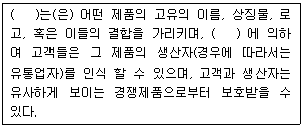
9. 제품/시장 확장 그리드(Product/Market Expansion Grid)에 관한 설명으로 틀린 것은?
10. 다음 중 시장세분화의 지리적 변수가 아닌 것은?
11. 소비자가 구입하고자 하는 휴대전화를 아래와 같이 평가했을 때의 설명으로 옳은 것은?
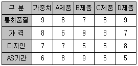
12. A대학교 인근에는 중국성, 가야성, 홍보석 등 다양한 중국음식점들이 있으며 모두 음식배달을 하고 있다. 이러한 상황에서 각 중국음식점들이 고려해야할 가격결정 방법으로 가장 적합한 것은?
13. 표적시장을 선택하기에 앞서 효과적인 시장세분화를 위해 충족되어야 하는 요건이 아닌 것은?
14. 기업의 환경분석을 통해 강점과 약점, 기회와 위협 요인을 규정하고 이를 토대로 마케팅 전략을 수립하는 기법은?
15. 가격할인 형태 중 신 모델 구입 시 구 모델을 반환하면 그만큼 가격을 할인해 주는 방법은?
16. RFM 분석법의 평가요소에 해당하지 않는 것은?
17. 포지셔닝 전략을 개발하기 위해서는 기본적으로 시장분석, 기업내부분석, 경쟁분석이 필요하다. 다음 중 경쟁분석 정보에 해당하는 것은?
18. 마케팅믹스(Marketing Mix)의 4P에 해당하지 않는 것은?
19. 다음 중 데이터베이스 마케팅 활용 절차를 바르게 나열한 것은?
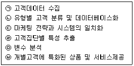
20. 아웃바운드 텔레마케팅의 활용분야가 아닌 것은?
21. 소비자의 구매 의사결정 과정을 순서대로 바르게 나열한 것은?
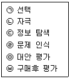
22. 2개 혹은 그 이상의 세분시장을 표적시장으로 선정하고 각각의 세분시장에 적합한 제품과 마케팅 프로그램을 개발하여 공급하는 전략은?
23. 다음( )안에 알맞은 것은?
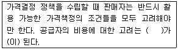
24. 인바운드 텔레마케팅에 관한 설명으로 옳지 않은 것은?
25. 소비자의 관여도가 낮고 브랜드 간 차이가 별로 나타나지 않은 상황에서 일어나는 구매행동은?
2과목: 시장조사
26. 다음 중 관찰대상들이 가지고 있는 속성의 상대적 크기를 측정하여 대상 간에 서로 비교할 수 있도록 하는 척도는?
27. 조사 진행 과정 중 사전조사의 결과 활용으로 가장 적합한 것은?
28. 조사방법에 따라 1차 자료와 2차 자료로 구분할 때 2차 자료에 해당하는 것은?
29. 다음과 같은 질문으로 얻은 측정치는 어떤 척도에 해당되는가?
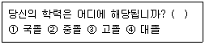
30. 효과적인 전화조사를 위한 커뮤니케이션 방법으로 적합하지 않은 것은?
31. 다음은 어떤 유형의 응답 형태에 해당하는가?
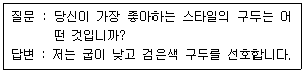
32. 획득하고자 하는 정보의 내용을 결정한 이후 이루어져야 할 질문지 작성과정을 순서대로 바르게 나열한 것은?
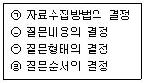
33. 측정한 자료의 적합성을 검증하는 두 가지 주요한 기준으로 옳은 것은?
34. 설문지작성을 위한 응답의 형태 중 응답의 항목들은 상호 배타적이고 모든 응답을 포괄할 수 있는 조건을 만족시키는 응답형태는?
35. 서스톤 척도(Theuston Scale)에 관한 설명으로 틀린 것은?
36. 다음 중 시장조사의 역할이 아닌 것은?
37. 소비자욕구를 파악하기 위해 고객조사를 할 때 폐쇄형 질문이 적절한 경우는?
38. 설문지 작성시 질문의 순서를 결정하기 위한 일반적인 사항으로 옳지 않은 것은?
39. 다음 중 자료처리를 위한 코딩(Coding)이 어려운 응답 형태는?
40. 다음 중 내적 타당도를 저해하는 요인이 아닌 것은?
41. 다음 중 비확률표본추출방법에 해당하는 것은?
42. 다음 중 시장조사의 설계 과정을 순서대로 옳게 나열한 것은?
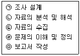
43. 대한민국에 거주하는 외국인을 대상으로 한 달에 지출되는 교육비에 대한 기초자료를 수집할 때 다양한 국적을 가진 사람과 비용 측면을 고려한다면 어떠한 조사방법이 가장 적합한가?
44. 어떤 현상이나 변수의 원인이 무엇인가에 대한 해답, 즉 두 변수 간의 인관관계에 대한 해답을 얻기 위한 조사방법은?
45. 우편조사와 전화조사의 공통적인 장점으로 옳은 것은?
46. 설문지를 구조적 설문지와 비구조적 설문지로 분류하는 기준으로 옳은 것은?
47. 다음 ( ) 안에 들어갈 가장 알맞은 것은?
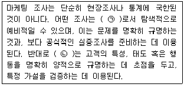
48. 측정의 신뢰성을 높이는 방법에 대한 설명으로 틀린 것은?
49. 우편조사의 회수율을 높이기 위한 노력과 효율적인 비용 측면에 대한 내용으로 거리가 가장 먼 것은?
50. 표집오차와 표본의 크기에 관한 설명으로 틀린 것은?
3과목: 텔레마케팅관리
51. 콜센터의 생산성 향상을 저해하는 요소로 가장 거리가 먼 것은?
52. 기존의 콜센터와 웹 콜센터의 차이점을 올바르게 설명한 것은?
53. 모니터링의 목적과 가장 거리가 먼 것은?
54. 개인 혹은 집단의 조직변화에 대한 거부적 행위를 변화에 대한 저항(Resistance to change) 이라고 하는데 이 변수에 속하지 않는 것은?
55. 달성 가능성이 높은 목표를 세우기 위해 SMART기법을 사용한다. ‘SMART’ 용어에 대한 표기가 잘못된 것은?
56. 신규채용에 있어 합리적인 선발도구가 갖추어야 할 타당성 요건과 가장 거리가 먼 것은?
57. 교육을 받고 현장에 복귀 후 교육의 효과를 측정하는 평가방법은?
58. 우수한 리더의 특성으로 옳지 않은 것은?
59. 금융기관에서 수행하는 고객등급화는 목적과 용도에 따라서 구분할 수 있다. 고객에 관한 신상정보와 연계된 거래활동을 분석하고 평가하여 이를 점수로 산정하고 등급을 부여하는 것은?
60. 아웃바운드 콜센터의 성과분석 관리지표에 관한 설명으로 옳은 것은?
61. ‘House’가 제시한 목표-경로 모형의 리더십 유형에 관한 설명으로 틀린 것은?
62. 텔레마케팅의 정의에 관한 설명으로 틀린 것은?
63. 다음이 설명하고 있는 것은?
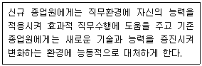
64. 콜센터 매니저의 역할과 가장 거리가 먼 것은?
65. 교육훈련의 전달방법을 결정하는 요인과 가장 거리가 먼 것은?
66. 원활한 텔레마케팅의 전개에 꼭 필요한 구성요소로 가장 거리가 먼 것은?
67. 텔레마케팅 도입시 예산편성에 고려하여야 할 사항과 가장 거리가 먼 것은?
68. 다음 중 콜센터의 인적자원 관리 방안으로 적합하지 않은 것은?
69. 다음 교육훈련과정개발을 위한 교수모형설계의 5단계 중 ( ) 안에 들어갈 가장 알맞은 것은?
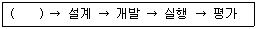
70. 고객의 응대사항 및 통화내용, 응대결과 등을 정확히 기록 유지하는 일종의 통화기록노트라고 하는 것은?
71. 다음 중 인바운드 콜과 아웃바운드 콜을 혼용해서 처리하는 업무형태는?
72. 리더십의 유형을 의사결정방식과 태도에 따라 구분할 때 태도에 따른 유형에 해당하는 것은?
73. 다음 중 보상을 통한 동기부여 방안으로 옳지 않은 것은?
74. 콜센터 조직의 특성 중 콜센터만의 독특한 조직문화가 아닌 것은?
75. 텔레마케터의 잦은 이직이 콜센터운영에 미치는 요인과 가장 거리가 먼 것은?
4과목: 고객응대
76. 소비자의 구매과정 중 구매 전 단계에서의 커뮤니케이션 목표와 가장 거리가 먼 것은?
77. 표현적인(Expressive) 유형의 고객 상담 전략과 가장 거리가 먼 것은?
78. CRM을 위한 고객 로열티 제공과 관계가 가장 먼 것은?
79. 효과적인 질문을 하기 위한 방법과 가장 거리가 먼 것은?
80. 고객 불만(Complain)의 긍정적인 측면과 가장 거리가 먼 것은?
81. 서비스 평가의 측정요소가 아닌 것은?
82. 관계마케팅 전략 개발을 위한 요소와 그에 대한 설명으로 틀린 것은?
83. 텔레마케팅을 통한 고객응대의 특성에 대한 설명으로 틀린 것은?
84. 고객 측면에서 상담이 필요한 이유가 아닌 것은?
85. 고객관계발전의 단계 중 ‘관계탐색단계’에 해당하는 것은?
86. 기업이 고객과 직 ㆍ 간접적으로 접촉하는 모든 채널과 방법들을 유기적으로 연관시키는 CRM의 형태는?
87. 성공적인 CRM 적용을 위한 고려사항이 아닌 것은?
88. 상담자가 상담 초기에 파악해야 하는 고객의 기본적 상담자료와 가장 거리가 먼 것은?
89. CRM(Customer Relationship Management)에 대한 설명으로 틀린 것은?
90. 고객과의 효과적이고 성공적인 커뮤니케이션을 위해 전달자의 장애요인 개선을 위한 사항으로 틀린 것은?
91. CRM의 등장 배경이 되는 마케팅 패러다임의 변화로 틀린 것은?
92. CRM에서 마케팅 성과측정 지표인 고객점유율에 관한 설명으로 거리가 가장 먼 것은?
93. 고객 문의에 대한 해결방법으로 가장 적합한 것은?
94. 다음 ( ) 안에 들어갈 알맞은 것은?
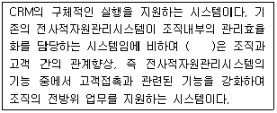
95. 텔레마케터의 ‘말하기 기법’에 관한 설명으로 가장 적합한 것은?
96. 고객이 가지고 있는 경계심과 망설임을 없애는 방법과 가장 거리가 먼 것은?
97. 고객가치 측정 기법이 아닌 것은?
98. 다음 중 메시지의 성격이 다른 하나는?
99. 소비자의 욕구가 다양해지고 기업 간의 경쟁이 치열하기 때문에 고객만족 경영이 필수적이 되었다. 이러한 경영환경의 변화에 관한 설명으로 틀린 것은?
100. 우유부단한 고객에 대한 상담기술을 설명하는 것으로 적합하지 않은 것은?